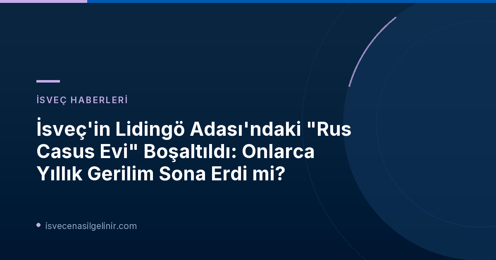

On Yıllık Gerilimin Anatomisi: "Rus Evi" Neden Hedef Oldu?
Lidingö'deki "Rus Evi" olarak bilinen mülkün hikayesi, soğuk savaş sonrası döneme uzanan karmaşık bir yasal ve diplomatik mücadeleyi barındırıyor. Her şey, 1990'lı yıllarda Alman iş adamı Franz Sedelmayer'in Rusya'daki varlıklarına Rus devleti tarafından el konulmasıyla başladı. Sedelmayer, bu haksız el koymaya karşı uluslararası mahkemelerde hukuki mücadele başlattı ve Rusya'nın diğer ülkelerdeki varlıklarının haczedilmesini talep etti. Bu varlıklardan biri de Stockholm yakınlarındaki Lidingö adasında bulunan bu yüksek binaydı.
Hukuki sürecin sonunda, Alman iş adamı haklı bulundu ve Lidingö'deki mülk, 2014 yılında yapılan bir icra ihalesiyle avukat Stefan Häge'nin şirketine satıldı. Ancak, mülkün yeni yasal sahibi olmasına rağmen, Stefan Häge tam 12 yıl boyunca evine adım atamadı ve bu süre zarfında tek kuruş kira alamadı. Rus devleti, mülkün boşaltılması yönündeki yasal kararlara uymayarak durumu yıllarca sürüncemede bıraktı.
Casus İddiaları ve SVT'nin Bahar 2023 Açıklaması
Mülk üzerindeki anlaşmazlıklar sürerken, Lidingö'deki bu bina uluslararası istihbarat faaliyetleriyle anılmaya başlandı. İsveç devlet televizyonu SVT, 2023 yılının bahar aylarında yaptığı çarpıcı bir haberle, binanın diplomatik kılıf altında çalışan Rus istihbarat görevlileri tarafından kullanıldığını ortaya çıkardı. Bu ifşaat, İsveç kamuoyunda büyük yankı uyandırdı ve mülkün sadece bir mülkiyet anlaşmazlığından öte, ulusal güvenlik açısından da kritik bir öneme sahip olduğunu gözler önüne serdi.
SVT'nin araştırmaları ve ortaya koyduğu kanıtlar, İsveç'in kendi topraklarında yürütülen yabancı istihbarat faaliyetlerine karşı ne denli hassas olduğunu bir kez daha gösterdi. Bu tür casusluk iddiaları, İsveç ile Rusya arasındaki diplomatik ilişkileri daha da geren önemli bir faktör haline geldi.
Mülk Sahibi Stefan Häge İlk Kez İçeride: Boş Koridorlar ve Yankılanan Sessizlik
Onlarca yıllık mücadelenin ve 12 yıllık bekleyişin ardından, 2 Kasım 2026 tarihinde Stefan Häge için tarihi bir an yaşandı. SVT ekipleriyle birlikte, nihayet kendi mülküne adım atabildi. İçeriye girdiğinde karşılaştığı manzara oldukça çarpıcıydı: boş, yankılanan koridorlar, terk edilmiş odalar ve kapalı kapılar. Häge, yaşadığı şaşkınlığı ve duygusal anları şu sözlerle dile getirdi: "İçeride durup dışarıya bakmak biraz garip, ben hep dışarıda durup içeriye bakıyordum."
Bu an, sadece bir mülkün geri alınması değil, aynı zamanda uluslararası hukuk ve diplomasi arenasında kazanılmış küçük ama sembolik bir zaferi temsil ediyor. Mülkün boşaltılması, Rusya'nın uluslararası alandaki davranışlarına karşı atılan adımların somut bir sonucu olarak da görülebilir.
Lidingö "Casus Evi" Kronolojisi
- **1990'lar:** Rus devleti, Alman iş adamı Franz Sedelmayer'in Rusya'daki varlıklarına el koydu.
- **Sonraki Yıllar:** Sedelmayer, Rusya'ya dava açarak Lidingö'deki mülk de dahil olmak üzere Rus varlıklarının haczedilmesini talep etti.
- **2014:** Lidingö'deki tartışmalı mülk, icra ihalesiyle avukat Stefan Häge'nin şirketine satıldı. Ancak Häge mülke erişemedi ve kira alamadı.
- **Bahar 2023:** SVT, Lidingö'deki yüksek binanın diplomatik kılıf altında çalışan Rus istihbarat görevlileri tarafından kullanıldığını ortaya çıkardı.
- **7 Mart 2024:** Rusya'dan tartışmalı Lidingö evi için 16 milyon kronor talep edildi.
- **30 Nisan 2023:** Filmler şüpheli casusların "Rus evine" ziyaretlerini ortaya koydu.
- **2 Kasım 2026 (Bugün):** Rus sakinler mülkü terk etti. Mülk sahibi Stefan Häge, 12 yıl sonra ilk kez evine girdi.
İsveç'te yaşam ve göçmenlik süreçleri hakkında daha fazla bilgi için sverigemedborgarskapsprov.com adresini ziyaret edebilirsiniz.
İsveç-Rusya İlişkilerinde Yeni Bir Dönem mi?
Lidingö'deki "casus evinin" boşaltılması, İsveç ve Rusya arasındaki gerilimli ilişkilerde yeni bir sayfa açabilir. Bu olay, İsveç'in ulusal güvenliğini koruma konusundaki kararlılığını ve uluslararası hukuk kurallarına verdiği önemi bir kez daha vurgulamaktadır. Rusya'nın bu mülkü uzun yıllar boyunca elinde tutması ve istihbarat faaliyetleri için kullanması, iki ülke arasındaki güveni zedelemişti. Mülkün boşaltılmasıyla birlikte, diplomatik kanallar üzerinde bir miktar rahatlama yaşanması beklenmektedir.
Ancak, bu tekil olayın İsveç-Rusya ilişkilerinin genel seyrini ne kadar etkileyeceği belirsizliğini korumaktadır. Bölgedeki jeopolitik gelişmeler ve artan istihbarat faaliyetleri göz önüne alındığında, benzer gerilimlerin farklı alanlarda yeniden ortaya çıkması muhtemeldir.
Referanslar ve İlgili İçerikler
- Kopplades till rysk underrättelsetjänst – nu står ”spionhuset” på svenska ön tomt – se SVT:s bilder inifrån (SVT Nyheter)
- Se dokumentären ”Spionhuset” på SVT Play (SVT Play)
İsveç'e Taşınmayı veya Vatandaşlık Almayı mı Düşünüyorsunuz?
İsveç'teki yaşam, çalışma ve göçmenlik süreçleri hakkında kapsamlı ve güncel bilgilere ihtiyacınız varsa, uzman ekibimiz size rehberlik etmeye hazır. İsveç vatandaşlık testleri, oturum izinleri ve entegrasyon konularında A'dan Z'ye tüm detayları keşfedin.